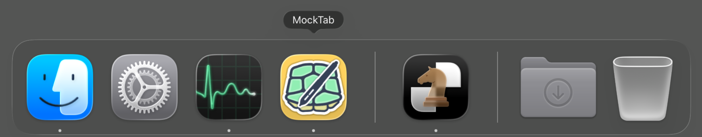

A driver for older Wacom tablets.
MockTab is a native macOS driver for Wacom drawing tablets — pressure-sensitive input devices used in digital art and illustration — that no longer have official support on modern macOS releases. Free and open source.
MockTab testing has covered only a limited set of hardware configurations. Filing an issue with observations and diagnostic detail will help broaden compatibility and support.
Download for macOS See supported tablets


Purpose
Wacom hardware tends to outlast its driver support, with functional tablets losing compatibility with with newer macOS releases. MockTab is a small, focused driver that targets USB and Bluetooth Wacom tablets from the early 2000s through up to about 2020, on macOS 13 and newer.
Approach
Wacom's drivers drop older hardware on every macOS upgrade, and the open-source alternatives ask a lot of their users. MockTab is a smaller answer: a focused driver for Mac users who want their tablet to keep working — configure it once and leave it alone.
Tablet area mapping
Choose which part of the tablet maps to which part of the screen. Proportional mode keeps circles round on any aspect ratio, so the pen feels like the pen.
Pen settings
Everything that affects how a stylus feels: pressure curve (a two-point Bézier editor with Linear, Soft, and Firm presets), stroke stabilization, double-click distance, rotation behavior, and cursor motion. Tested with Photoshop, Affinity, Krita, Procreate Dreams, Rebelle, and Clip Studio.


Buttons & express keys
Remap barrel buttons, touch ring, and express keys to any modifier-plus-key combination. Live capture: click the field, press the shortcut. Cycle between touch ring with a toggle or dedicated button.


Per-app overrides
Override any tablet setting on a per-app basis — area, pressure curve, button mapping, display routing. Drop an app onto the override bar and the driver auto-switches when that app comes forward. Photoshop gets one pressure curve, Illustrator gets another, the system default holds everywhere else.


Profiles, in and out
Configurations export as structured JSON — drag straight from the Profiles tab to the Finder, or import to roll a setup back. Per-tablet, per-app, all of it. Useful for backups, sharing presets, or moving between machines.


Display mapping
Route the tablet to any connected display. Useful for multi-monitor setups where you want the pen confined to a single screen.


Live scratchpad
Test pen pressure, tilt, and button behavior.


Features
- Pressure, tilt, and pen rotation (where the hardware supports it)
- Per-app overrides for area, pressure, buttons, and display routing
- Multiple tablet generations connected simultaneously, with automatic switching when you pick one up
- Wireless via USB dongle and Bluetooth
- Touch ring (multi-slot modes) and touch strip
- Profile import / export as JSON, drag-to-Finder
- Undo / redo across every settings pane (⌘Z)
- In-app help (⌘?) and a menu-bar mode that hides the Dock icon
- Native AppKit app, signed and notarized, no kernel extensions
Unsupported
- MockTab does not work with Huion, XP-Pen, Xencelabs, or other vendors
- Support for post-2020 Wacom devices requires further analysis
- MockTab does not provide touch / gesture support (though a future release may address touch sensitivity)
- In its current form, this software is not available for Linux, iPad, Haiku or Windows
Get it
Requires macOS 13 or later.
First launch
macOS resricts some applications behind two privacy prompts: Accessibility and Input Monitoring. See Configuration for the walkthrough with screenshots.

Frequently Asked Questions (FAQ)
What is MockTab?
MockTab is native macOS driver for Wacom drawing tablets that no longer have official support on modern macOS releases.
How is MockTab different from Wacom's driver or OpenTabletDriver?
Wacom's software is closed-source and drops older hardware with each macOS release. OpenTabletDriver is an accomplished open-source project with broad hardware and platform coverage and is the best option in many cases. MockTab takes a more limited approach: deliberately narrow. One platform, one vendor, native Swift, no tangle of background daemons, and no kernel extensions. The smaller scope means fewer moving parts and a more focused configuration UI.
My tablet works with Wacom's driver or OpenTabletDriver — why would I need this?
If your device already works, then you have no need to change. MockTab exists for hardware the official driver dropped, and for people who prefer a small native Mac app over a broader system service.
What tablets does MockTab support?
Development has confirmed a handful with real hardware; and support for others stems from Linux kernel and open-source references that may require further testing. The Hardware page lists every registered model with its confirmation status. MockTab does not currently cover tablets from other vendors, nor post-2020 Wacom hardware..
Can I use an iPad as a drawing tablet?
Yes, but not with MockTab. Astropad Slate and Apple's built-in Sidecar handle the iPad-as-tablet case directly.
What are the system requirements?
macOS 13 (Ventura) or later, on Apple Silicon or Intel. A supported Wacom tablet over USB or Bluetooth. Around 30 MB on disk.
Is there a Linux, Windows, or Haiku version?
No. macOS only, by design. The Human Interface Device (HID) parsing and event-synthesis approach MockTab uses would translate reasonably well to Linux or Haiku, as the platforms are capable, but that work hasn’t been done. For Linux and Windows, look at OpenTabletDriver.
How do I install it?
Download the latest disk image (.dmg) from
Releases, drag MockTab.app
into Applications, and launch. The First launch section above walks
through the privacy prompts.
Is this spyware? The privacy prompts sound suspicious.
No. MockTab makes no network calls, ships no telemetry, and declares zero data collection in its privacy manifest. MockTab ships under GPL-3 — read the source on GitHub if you want to verify. macOS forces both prompts on every third-party tablet driver: Accessibility lets MockTab inject pen pressure into other apps, and Input Monitoring lets it read raw HID reports from your tablet.
Can MockTab run alongside Wacom's driver or OpenTabletDriver?
No. Two drivers reading the same HID device compete for control and produce erratic input. MockTab attempts to notify you of potential conflicts, with a note about how to resolve them. A utility like St. Clair Software's App Tamer might help to halt running processes without uninstalling them.
How do I remove MockTab?
Quit it from the menu bar, drag MockTab.app to the Trash, and optionally delete
~/Library/Preferences/com.cyzor.mocktab.plist and revoke its Accessibility and Input
Monitoring grants in Privacy & Security. MockTab installs no system extensions, daemons, or
login items, so nothing else needs cleanup.
What does the name mean?
The project takes its name from the Mock Turtle in Alice's Adventures in Wonderland, who laments no longer being what he once was.
Who developed this?
MockTab is an independent project from Jay Petronis, developed using a small set of older Wacom drawing tablets.
How can I get help?
Press ⌘? in any settings pane for in-app help. The Info pane has a Copy Diagnostics button that bundles your driver state into a paste-ready text block for bug reports. Then open an issue at GitHub.